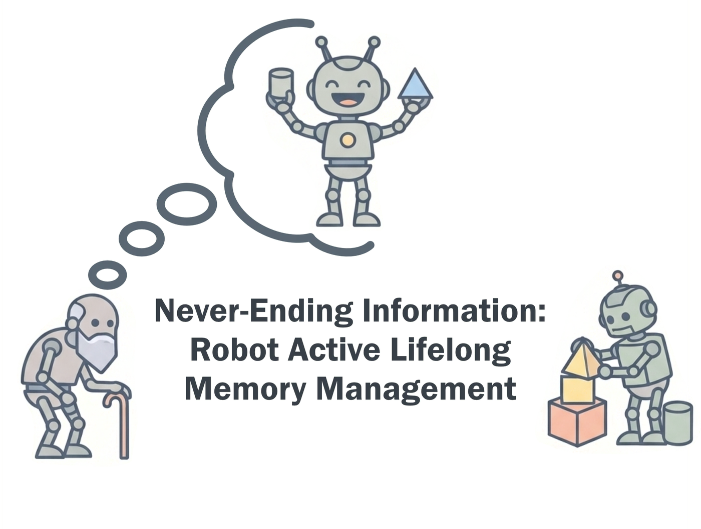
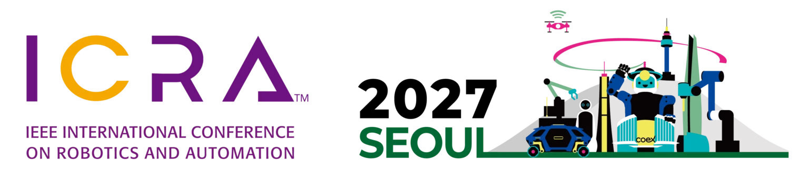

Useful Memory
How a robot should structure, manage, and use gathered information to support reasoning, planning, and continual learning.


What information should a robot acquire, retain, learn from, and forget as the world changes?
Robots operating for days or months must decide which experience remains useful as environments and tasks change, since keeping every observation is neither scalable nor sufficient. Lifelong active memory management asks what information to acquire, represent, retain, update, share, or forget under limited storage, computation, and communication.
Robots are moving towards sustained long-term deployment in changing environments, while vision-language models and embodied agents bring richer learned representations into robotic reasoning. Their finite context windows limit the observation history they can use, and robot fleets add the need to reconcile and exchange knowledge.
How a robot should structure, manage, and use gathered information to support reasoning, planning, and continual learning.
How a robot should act to acquire relevant information and maintain an updated understanding of the world as it changes.
What robots in a fleet should share, reconcile, or keep local.
We further ask what evaluation protocols and setups are required to validate task performance and adaptation for these questions.
Share your ideas, experiences, and open questions. Together, we'll build the workshop's memory and see what it can answer.
General insights, ideas, deployment cases, and failure examples worth retaining.
Open questions you would like the record to answer.
Semantic search and clustering link entries to the workshop themes and to one another.
The board helps select questions for the panel, and we close the day with a live analysis.
You can add entries before and during the workshop. Afterwards, we will publish the board together with a summary of the main conclusions, unresolved questions, and proposed next steps.
Explore the memory board ↗All times are local and tentative.
| Time | Session |
|---|---|
| 08:30 – 08:45 | Welcome & memory board intro |
| 08:45 – 09:15 | Harold Soh · NUSMemory Representations for Spatial-Semantic Navigation |
| 09:15 – 09:45 | Katerina Fragkiadaki · CMUTitle TBA |
| 09:45 – 10:15 | Tanja Kaiser · UTNKnowledge in Multi-Robot Systems: Information Fusion, Open-Ended Adaptation, and Future Challenges |
| 10:15 – 11:15 | Coffee & breakout groups |
| 11:15 – 11:45 | Spotlight talks |
| 11:45 – 12:30 | Posters & memory board |
| 12:30 – 13:30 | Lunch |
| 13:30 – 14:00 | Jeannette Bohg · StanfordDeploying Robots in the Messy Real World: What Does It Take? |
| 14:00 – 14:30 | Navinda Kottege · CSIRORemembering a Changing World: Persistent Spatial Intelligence for Robot Teams |
| 14:30 – 15:00 | Nima Fazeli · University of MichiganWhat Should Robots Remember? Designing Memory for Generalist Robot Policies |
| 15:00 – 15:30 | Invited talk · TBA |
| 15:30 – 16:15 | Coffee & posters |
| 16:15 – 16:45 | Breakout reports |
| 16:45 – 17:30 | Panel with industry and applied research speakers |
| 17:30 – 18:00 | Live memory board analysis, awards, and closing remarks |
| 18:00 – 19:00 | Networking and social gathering |
We invite non-archival extended abstracts in two categories. We especially welcome failure cases: assumptions that break over time, or cases where retaining information hurts downstream performance.
Short papers and work-in-progress results, particularly from early-career researchers.
Experience from long-term deployments, including what did not work, particularly from experienced roboticists.
For a student or early-career author. More details soon.
All deadlines are 23:59 AoE (Anywhere on Earth).
Supported by the IEEE RAS TC Working Group on Active Perception and Exploration, which funds the awards, travel grant, and social event.